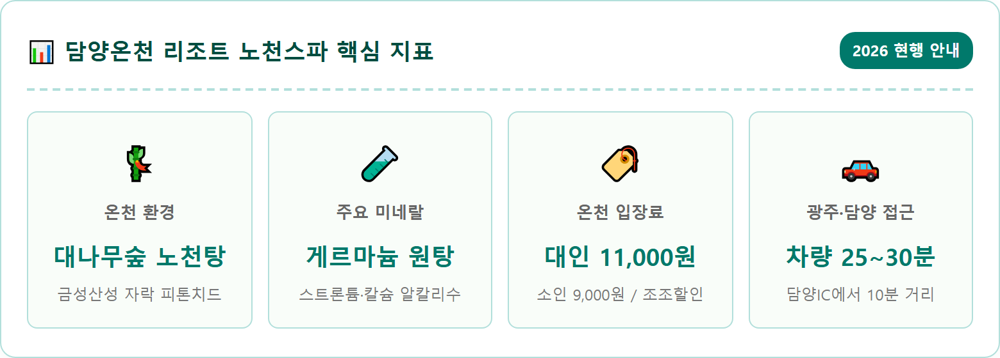
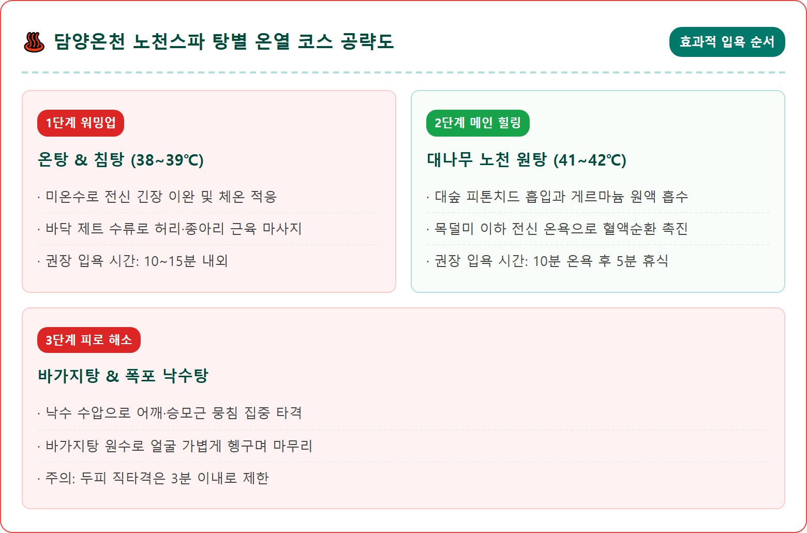
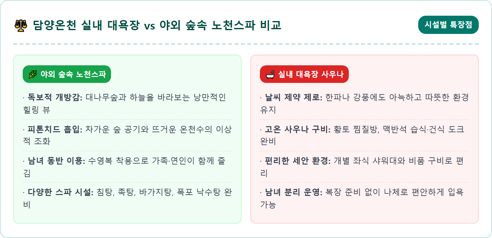
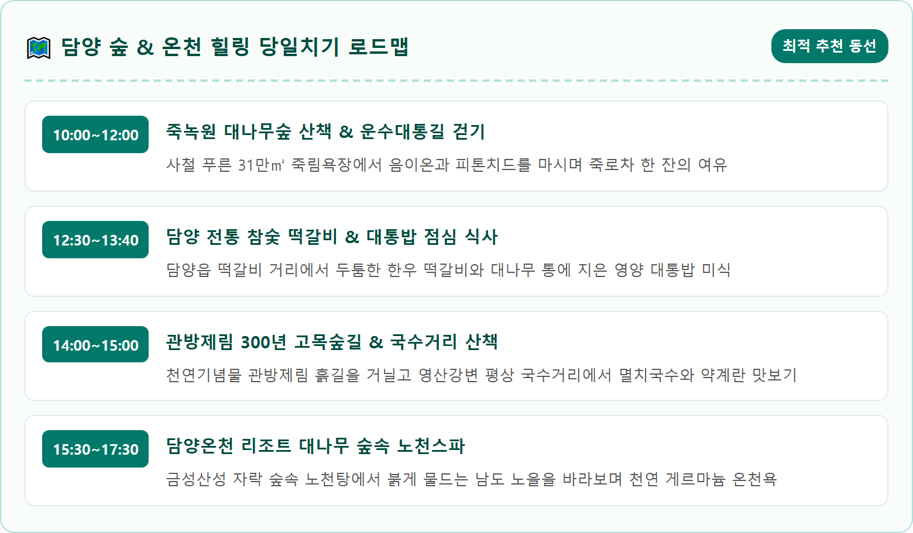
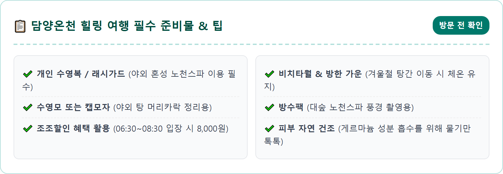
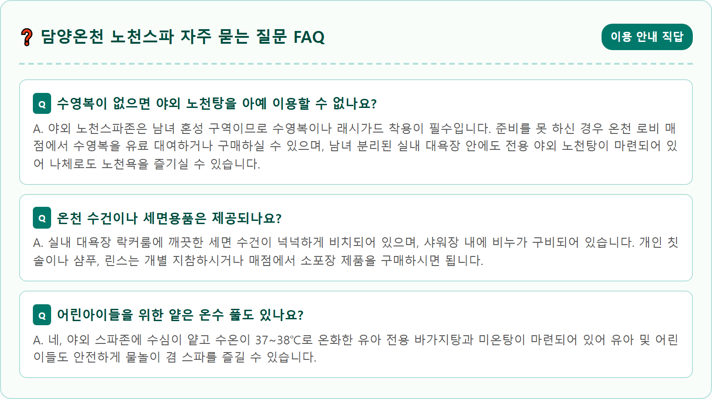

A peaceful, photorealistic landscape photograph of an outdoor hot spring spa nestled in a lush bamboo and pine forest in Damyang, South Korea. Warm steam billows gently from natural stone open-air thermal pools surrounded by dense, tall green bamboo stalks and rustic wooden pavilions. The late autumn morning sunlight filters softly through the bamboo leaves, creating warm golden rays dancing across the crystal-clear thermal waters. Elegant stone pathways lead between serene bathing pools. Very calm, luxurious, and zen-like atmosphere, ultra-high resolution, 8k cinematic photography, 1:1 aspect ratio.

대나무의 고장이자 가사문학의 산실인 전라남도 담양은 사계절 내내 푸른 대숲과 맑은 공기로 여행자들의 마음을 편안하게 감싸주는 대표적인 힐링 도시입니다. 그중에서도 담양읍 북쪽, 호남 3대 산성 중 하나인 금성산성과 담양호가 맞닿은 수려한 산자락에 자리 잡은 '담양온천(담양리조트 온천)'은 겨울철 남도 여행객들의 사랑을 독차지하는 숨은 힐링 명소입니다.
이곳 담양온천은 영산강의 시원(始原)인 가마골 용소와 인접한 청정 지하 암반 지대에서 개발된 천연 온천입니다. 깊은 지하 화강암반층에서 수만 년 동안 자연 여과되며 축적된 풍부한 미네랄과 게르마늄 성분을 고스란히 품고 솟아나, 예로부터 인근 주민들 사이에서 피부가 맑아지고 관절 통증이 누그러지는 영험한 샘물로 입소문이 자자했습니다.
도심의 번화가에 위치한 삭막한 빌딩형 사우나와 달리, 사방이 울창한 자연림과 대나무밭으로 둘러싸여 있어 온천 단지에 들어서는 순간 코끝을 스치는 상쾌한 숲 냄새가 일상의 찌든 스트레스를 단숨에 정화해줍니다. 자연과 물, 그리고 피톤치드가 완벽한 삼위일체를 이루는 호남 최고의 힐링 휴양지입니다.
담양온천의 가장 독보적인 매력은 뭐니 뭐니 해도 사철 푸른 대나무 숲과 적송이 탕 주변을 둥글게 병풍처럼 에워싸고 있는 '야외 숲속 노천스파'입니다. 차가운 겨울바람이 귓가를 스치고 지나갈 때, 모락모락 피어오르는 하얀 수증기 속으로 몸을 담그면 머리는 맑고 시원하며 몸은 따뜻하고 나른해지는 '두한족열(頭寒足熱)'의 극치를 체험할 수 있습니다.
대나무 잎이 바람에 스치며 내는 사각거리는 자연의 풍경 소리는 그 어떤 명상 음악보다 깊은 심신 안정을 유도합니다. 특히 대나무와 소나무가 뿜어내는 천연 피톤치드 물질은 차가운 겨울 공기 속에서 더욱 청량하게 응축되어, 깊은 호흡을 들이쉴 때마다 폐 속까지 깨끗하게 씻겨 내려가는 듯한 상쾌함을 전해줍니다.
노천스파 공간은 남녀노소가 함께 이용할 수 있는 패밀리 스파존과 남녀 대욕장 전용 노천탕으로 나뉘어 있어, 연인이나 가족 단위 방문객도 자유롭게 담소를 나누며 여유로운 온천욕을 즐길 수 있습니다. 탕 주변 조경석 사이로 피어난 은은한 조명과 푸른 대숲이 어우러지는 늦은 오후 시간대의 풍경은 마치 동화 속 온천 마을에 들어온 듯 낭만적입니다.

담양온천의 온천수는 수질 검사에서 pH 8.2~8.5를 기록하는 천연 약알칼리성 미네랄 온천수입니다. 특히 현대 의학에서 '기적의 원소'라 불리는 게르마늄(Ge)과 뼈·관절 건강에 유익한 스트론튬(Sr), 그리고 칼슘, 나트륨, 탄산수소이온이 황금 비율로 용해되어 있어 온천수로서의 가치가 매우 높습니다.
천연 유기 게르마늄 성분은 체내 세포의 산소 공급을 원활하게 돕고 면역력을 활성화하며, 체내 유해 활성산소를 억제하는 항산화 기능이 뛰어난 것으로 널리 알려져 있습니다. 또한 피부 표면의 각질을 부드럽게 연화시키고 피지 분비를 조절해주어, 온천욕 후 손끝으로 피부를 만져보면 마치 고급 보습 에센스를 바른 것처럼 매끈하고 촉촉한 감촉을 실감할 수 있습니다.
겨울철 찬 바람으로 인해 거칠어지고 가려운 건성 피부나 아토피, 그리고 오랜 실내 근무로 굳어진 어깨 결림과 요통을 겪는 분들에게 담양온천의 게르마늄 원탕은 천연 치료제 역할을 톡톡히 해냅니다. 물에서 특유의 역한 유황 냄새가 나지 않고 맑고 투명하여 냄새에 민감한 아이들이나 어르신들도 거부감 없이 편안하게 이용할 수 있습니다.
담양온천은 대규모 리조트 단지 내에 위치하여 넓은 주차 공간과 청결한 실내 라커룸, 파우더룸, 매점, 식당가 등 최고 수준의 편의시설을 완비하고 있습니다. 2026년 기준 정상 요금은 대인(중학생 이상) 11,000원, 소인(36개월~초등학생) 9,000원입니다.
알뜰하게 이용할 수 있는 다양한 할인 제도도 마련되어 있습니다. 아침 06:30부터 08:30 사이에 입장하는 조조 이용객은 1인당 8,000원에 입장할 수 있는 '조조할인' 혜택이 적용됩니다. 또한 담양리조트 호텔이나 빌라형 콘도 투숙객, 그리고 20인 이상 단체 방문객에게도 할인 요금이 적용되므로 방문 계획 시 참고하시면 유용합니다.
어린아이나 거동이 불편한 어르신을 모시고 프라이빗하게 온천욕을 즐기고 싶은 분들을 위해 '가족탕(단독 스파룸)'도 예약제로 운영됩니다. 독립된 객실 안에 대형 온천 욕조와 휴식용 침상, 개별 파우더룸이 갖추어져 있어 2~3시간 동안 타인의 시선 없이 가족만의 오붓한 온천 휴식을 누릴 수 있습니다.

담양온천 노천스파를 방문했다면 야외에 마련된 다채로운 테마 탕들을 골고루 체험해보는 재미를 놓치지 마세요. 가장 먼저 몸을 담그기 좋은 곳은 누운 자세로 편안하게 온천수를 즐길 수 있는 '침탕(寢湯)'입니다. 인체공학적으로 설계된 바닥에 누우면 등과 허리, 다리 뒤쪽에서 미세한 온천수 공기 방울이 솟아올라 굳은 척추 기립근을 부드럽게 마사지해줍니다.
온탕에서 몸을 충분히 덥힌 후에는 높은 석벽 위에서 온천수가 줄기를 이루며 쏟아져 내리는 '폭포 낙수탕'으로 이동해보세요. 머리를 숙이고 어깨와 목덜미 부위에 시원하게 떨어지는 온천수 물줄기를 맞으면, 평소 스마트폰과 컴퓨터 사용으로 만성 피로에 시달리던 승모근의 뻐근함이 씻은 듯이 풀리는 쾌감을 만끽할 수 있습니다.
노천탕 가장자리 통나무 받침대에 앙증맞게 놓인 '바가지탕'은 차가운 바람에 달아오른 얼굴을 맑은 온천수로 가볍게 씻어내거나, 탕 밖으로 나와 시원한 공기를 쐴 때 다리에 따뜻한 물을 끼얹는 용도로 유용합니다. 온천욕 도중 갈증이 날 때를 대비해 입구 매점에서 차가운 감식초나 식혜를 준비해오시면 노천욕의 즐거움이 배가됩니다.
온천욕을 마치고 상쾌해진 몸으로 담양읍내로 이동하면, 천연기념물 제366호로 지정된 유서 깊은 풍치림 '관방제림(官防堤林)'이 기다리고 있습니다. 조선 인조 26년(1648년) 담양부사 성이성이 수해를 방지하기 위해 영산강 둑을 쌓고 나무를 심기 시작하면서 형성된 이 숲길은 300년이 넘는 거대한 고목 420여 그루가 2km에 걸쳐 장엄한 터널을 이루고 있습니다.
푸조나무, 느티나무, 팽나무, 벚나무 등 어른 세 사람이 팔을 둘러도 모자랄 만큼 웅장한 둘레를 자랑하는 고목들이 늦가을 갈색과 황금빛 단풍 잎을 떨구며 고즈넉한 운치를 뿜어냅니다. 발아래로는 바스락거리는 낙엽 밟는 소리가 정겹게 들리고, 둑길 바로 아래로는 맑은 영산강 지류인 담양천이 고요하게 흘러갑니다.
평탄한 흙길과 나무 데크로 조성되어 있어 남녀노소 누구나 편안하게 걸을 수 있으며, 강변을 따라 놓인 징검다리를 건너며 바라보는 관방제림의 반영 풍경은 사진작가들이 사랑하는 대표적인 포토존입니다. 늦은 오후 해질녘에 둑길 벤치에 앉아 강물 위로 반짝이는 윤슬을 바라보는 시간은 더없는 평화를 선사합니다.

담양 여행에서 빼놓을 수 없는 상징적인 명소는 단연 '죽녹원'입니다. 관방제림 바로 맞은편에 자리한 31만㎡(약 9만 4천 평) 규모의 죽녹원은 분죽, 왕대, 맹종죽 등 수만 그루의 대나무가 하늘을 찌를 듯 빽빽하게 솟아오른 국내 최대의 대나무 정원입니다.
겨울철 모든 나무가 앙상하게 잎을 떨굴 때도 죽녹원의 대나무들은 싱그러운 초록빛을 잃지 않아, 숲길로 들어서는 순간 계절을 잊은 듯한 청량감을 안겨줍니다. 2.4km에 달하는 탐방로는 '운수대통길', '죽마고우길', '철학자의 길' 등 8가지 테마 산책로로 아기자기하게 나뉘어 있으며, 숲속 정자에서 바람에 스치는 댓잎 소리를 들으며 마시는 따뜻한 '죽로차(대나무 이슬을 먹고 자란 찻잎으로 덖은 차)' 한 잔은 잊지 못할 추억을 선사합니다.
죽녹원에서 차로 5분 거리인 '메타세쿼이아 가로수길'도 환상적인 연계 드라이브 코스입니다. 여름철 짙푸른 녹음을 뽐내던 거대한 메타세쿼이아 고목들이 11월 중순이 되면 붉은 벽돌색과 적갈색 융단을 두르고 웅장한 가을 피날레를 연출합니다. 이국적인 가로수 터널 길을 천천히 걸으며 남기는 사진은 한 폭의 수채화 같은 감성을 자랑합니다.
온천욕과 숲길 산책으로 오감을 깨웠다면, 이제 미식의 고장 남도 담양이 자랑하는 진수성찬을 맛볼 차례입니다. 담양을 대표하는 1등 미식은 단연 궁중에서 유래하여 사대부 가문으로 전승된 전통 '참숯 떡갈비'입니다.
갈빗살을 칼로 일일이 다진 후 배즙과 양파, 간장 등으로 맛을 낸 비법 양념에 재워 참숯불에 지글지글 구워내는 담양 떡갈비는 입에 넣는 순간 은은한 숯불 향과 함께 부드럽고 풍부한 육즙이 입안 가득 터져 나옵니다. 질기지 않고 사르르 녹아내리는 육질 덕분에 어린아이부터 치아가 약한 어르신까지 온 가족이 함께 즐기기에 최적입니다.
떡갈비와 환상의 짝꿍을 이루는 '대통밥'은 3년 이상 자란 굵은 대나무 통에 찹쌀, 흑미, 밤, 대추, 은행, 잣을 채우고 한지로 봉한 뒤 쪄낸 영양밥입니다. 대나무 특유의 은은한 죽향이 밥알 하나하나에 깊게 배어들어 반찬 없이 밥만 씹어도 달착지근하고 고소한 풍미가 일품입니다. 관방제림 아래 천변에 늘어선 '국수거리'에서 멸치 육수로 진하게 우려낸 물국수와 매콤한 비빔국수, 그리고 대나무 잎과 찻물에 삶아낸 구수한 약계란을 곁들이는 것도 부담 없는 별미입니다.
담양온천은 호남고속도로와 광주대구고속도로가 교차하는 담양IC에서 차량으로 약 10분 거리에 위치해 있어 광주광역시 및 전북 남원, 순창 등 인근 대도시에서의 접근성이 매우 뛰어납니다.
자가용을 이용할 경우 내비게이션에 '담양온천' 또는 '담양리조트'를 입력하시면 되며, 리조트 정문 앞과 온천동 뒤편으로 300대 이상 수용 가능한 넓은 무료 주차장이 조성되어 있습니다. 주말 피크 타임에도 주차 요원의 친절한 안내로 혼잡 없이 여유롭게 주차할 수 있습니다.
대중교통을 이용하실 경우 KTX 광주송정역이나 광주종합버스터미널(유스퀘어)에서 담양 방면 시내버스(311번 등)를 탑승하여 담양공용버스터미널에 하차한 뒤, 금성면 방면 군내버스를 환승하거나 터미널 앞에서 택시(약 10분, 요금 1만 원 안팎)를 이용하시면 편리하게 도착할 수 있습니다. 당일치기 코스는 물론 담양리조트 호텔에서 하룻밤 묵으며 즐기는 1박2일 온천 힐링 여행으로도 더없이 훌륭합니다.


| 구분 | 세부 내용 | 비고 및 이용 안내 |
|---|---|---|
| 위치 주소 | 전라남도 담양군 금성면 금성산성길 202 | 내비게이션: 담양온천 또는 담양리조트 |
| 운영 시간 | 06:30 ~ 20:00 (주말·공휴일 20:30까지) | 연중무휴 상시 운영 / 입장 마감 1시간 전 |
| 이용 요금 | 대인 11,000원 / 소인 9,000원 | 조조할인 8,000원 (06:30~08:30 발권 시) |
| 시설 구성 | 야외 대나무 노천스파, 실내 대욕장, 사우나, 가족탕 | 남녀 혼성 야외존 수영복 착용 필수 |
| 주차 안내 | 리조트 전면 전용 대형 주차장 완비 | 전액 무료 주차 / 대형 버스 주차 가능 |
| 인근 명소 | 관방제림(차량 10분), 죽녹원(차량 10분), 메타세쿼이아길 | 담양 읍내 주요 관광지 10~15분 내 연계 |